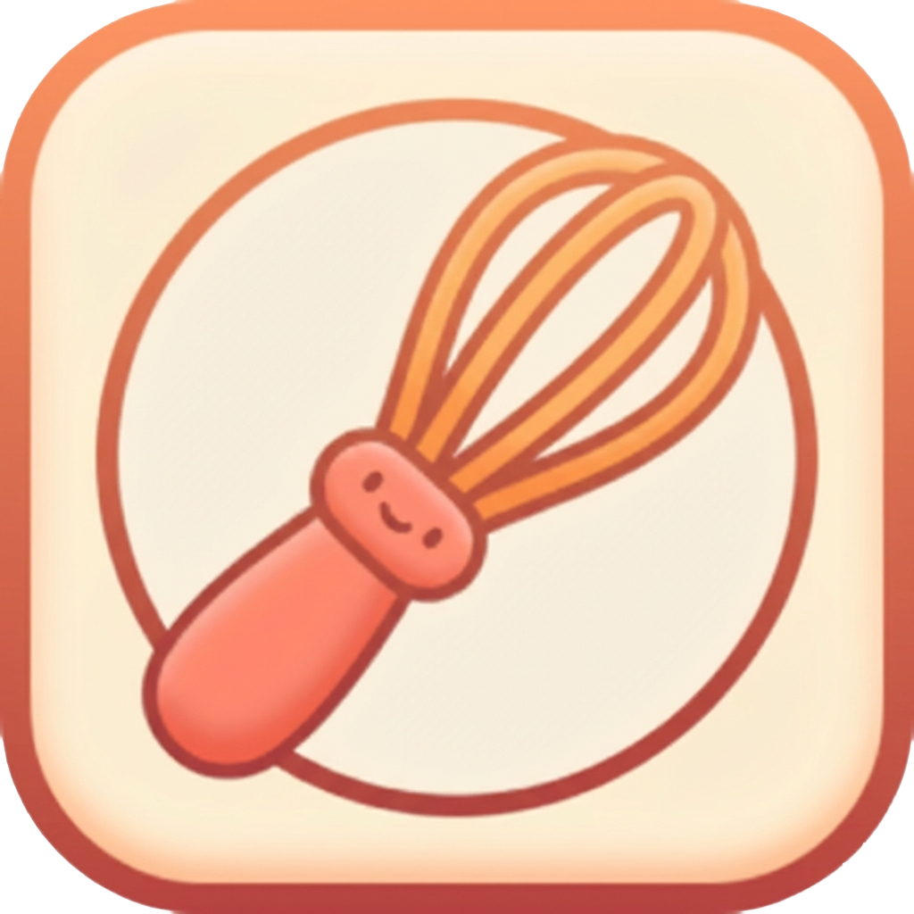

Sesh
Remote control for every coding agent.

Channel Surf
Your Plex library, as live TV.

kich.io
Pantry, recipes and grocery lists for one household.

Standard Reader
An editorial reader for standard.site publications.

atstore.fyi
An open app directory for the Atmosphere.

cocore
Receipts for shared compute on the AT Protocol.

tealscape
A walkable 3D world of live teal.fm listening.
Marquee
Request titles for your Plex server, Apple TV app style.
vinyl-scrobbler
Now-playing and lyrics on the TV for records.